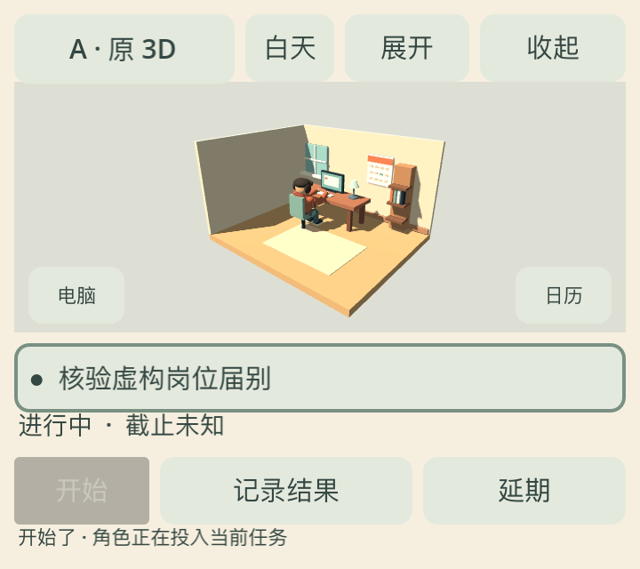
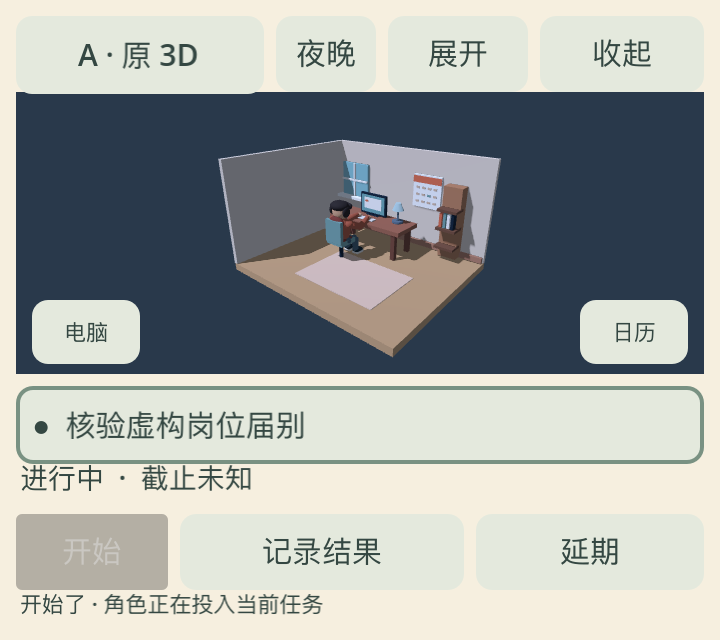
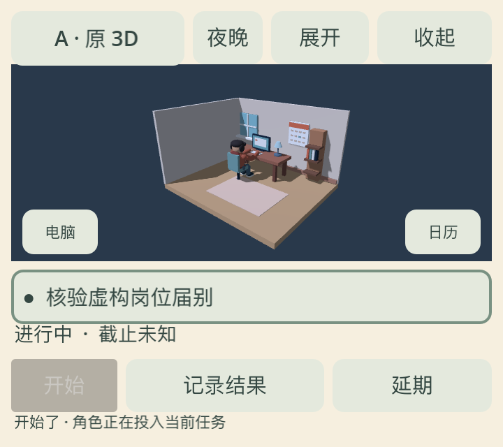
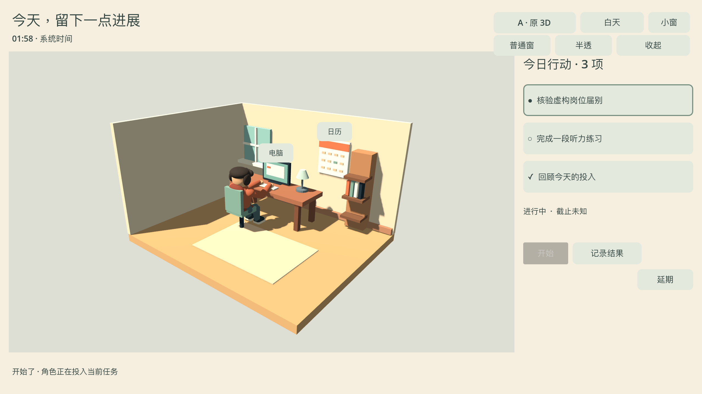

原 A 房间、镜头、灯光、桌椅、UI 固定。R1 静态坐姿和 R2 均是同仓原创角色；R2 只新增坐姿骨骼、双手交替的短动作和手指。图是 Godot 4.7 实机截图。左侧小窗请按 360 CSS 像素观看。
观察：全窗能见前臂交替；小窗能辨“人在电脑前”，难辨单手键位。髋部穿入椅面、袖口接缝和站立到坐下过渡尚未解决。本页不宣布角色已精修完成。




360×320、白天、3 秒、原生 720×640 位图、30 fps H.264；包含坐姿轻微落定和一轮以上双手交替。